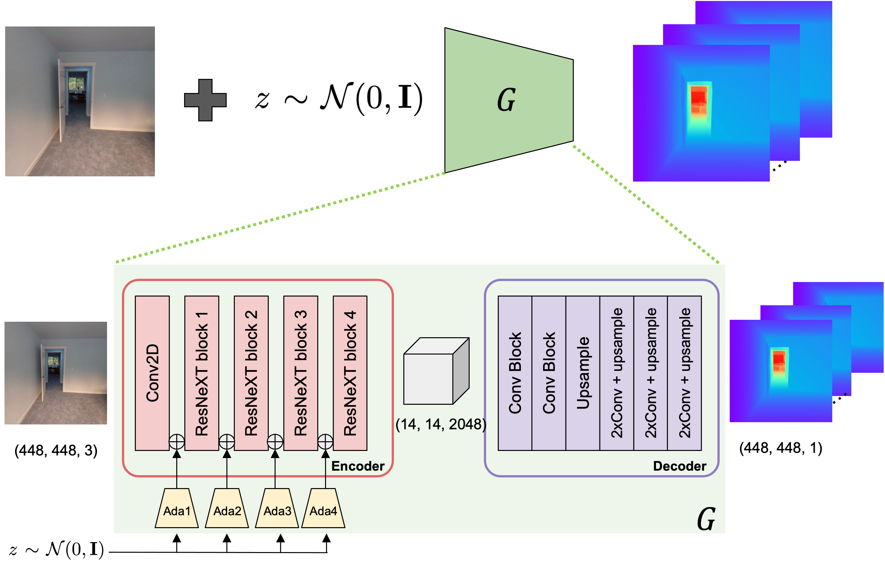

1Stanford University
2Google
3Simon Fraser University
Conference on Computer Vision and Pattern Recognition (CVPR), 2023
SCADE Overview. We present SCADE, a novel technique for NeRF reconstruction under sparse, unconstrained views for in-the-wild indoor scenes. We leverage on generalizable monocular depth priors and address to represent the inherent ambiguities of monocular depth by exploiting our ambiguity-aware depth estimates (leftmost). Our approach accounts for multimodality of both distributions using our novel space carving loss that seeks to disambiguate and find the common mode to fuse the information between different views (middle). As shown (rightmost), SCADE enables better photometric reconstruction especially in highly ambiguous scenes such as non-opaque surfaces.
Abstract
Neural radiance fields (NeRFs) have enabled high fidelity 3D reconstruction from multiple 2D input views. However, a well-known drawback of NeRFs is the less-than-ideal performance under a small number of views, due to insufficient constraints enforced by volumetric rendering. To address this issue, we introduce SCADE, a novel technique that improves NeRF reconstruction quality on sparse, unconstrained input views for in-the-wild indoor scenes. To constrain NeRF reconstruction, we leverage geometric priors in the form of per-view depth estimates produced with state-of-the-art monocular depth estimation models, which can generalize across scenes. A key challenge is that monocular depth estimation is an ill-posed problem, with inherent ambiguities. To handle this issue, we propose a new method that learns to predict, for each view, a continuous, multimodal distribution of depth estimates using conditional Implicit Maximum Likelihood Estimation (cIMLE). In order to disambiguate exploiting multiple views, we introduce an original space carving loss that guides the NeRF representation to fuse multiple hypothesized depth maps from each view and distill from them a common geometry that is consistent with all views. Experiments show that our approach enables higher fidelity novel view synthesis from sparse views.
Toggle arrows to browse through results from the different datasets.
Overview
The main idea is to leverage depth as a prior in order to constrain nerf optimization under the sparse view regime. However, when estimating depth from a single image, there can be multiple, equally valid depth estimates, these arise from inherent ambiguities such as albedo vs shading, scale, or non-opaque surfaces.
Our Ambiguity-Aware Prior

We retain these ambiguities at the stage of monocular depth estimation by representing depth as a distribution, which can be multimodal, represented with samples using conditional Implicit Maximum Likelihood Estimation (cIMLE) to capture variable depth modes. The network architecture is a simple combination of a state-of-the-art monocular depth estimation network, LeReS, with cIMLE that is implemented by adding AdaIn layers to the encoder. This allows us to output a distribution of possible depths from a single image, represented as a set of samples.
Ambiguity-Aware Depth Estimates
We find that our ambiguity aware prior is able to capture the different ambiguities, such as albedo vs shading (top), different scales of concavity (middle) and multimodality in the outputs of non-opaque surfaces (bottom).
Why does it work?
We achieve variable depth modes by exploiting inconsistently labeled training data. In the Taskonomy dataset that was used to train our prior, different training images with non-opaque surfaces label depth differently: shooting through the glass (left), on the glass (middle), or a mixture of both (right). Despite multiple possible depth labels, each image only has one ground truth label. Training with cIMLE allows our prior to model these multiple possible (ambiguous) outputs through sampling, even when given only one label per image. We also observe that our trained prior is also able to capture variable modes on reflective surfaces that typical monocular depth estimation networks struggle on.
Space Carving Intuition
When given a sparse set of views, we are able to resolve the ambiguities by fusing information from the multiple views. To do so, we draw inspiration from the classical space carving. For every view, illustrated by the green and yellow cameras, we have multiple depth hypothesis from our ambiguity-aware prior. For simplicity, let’s assume there are two hypothesis per camera (labelled 1 and 2). Space carving eliminates inconsistent hypotheses: E.g. green hypothesis 2 is not consistent with both yellow hypotheses because if it were consistent, everything in front of the green camera cone should be empty.
SCADE
Thus in SCADE, we distill the consistent hypotheses for each view into a global 3D geometry represented with a NeRF. To achieve this, we introduce our novel space carving loss function on the two distributions: our ambiguity-aware prior and the ray termination distance of NeRF, that is differentiable and sample-based. Our space carving loss drives the learned depth distribution from the NeRF to be consistent with some depth hypothesis in every view. Our resulting loss function is mode seeking. Moreover, as opposed to existing works which supervise 2D moments, we supervise at individual samples along each ray in 3D.
Additional Results
Samples from our Ambiguity-Aware Depth Estimates on train images of the different scenes used in our experiments. Ambiguity is shown in [Left; right]: (a) How far the back wall is relative to the chair as well as the width of the cabinet and how far it is relative to the desk; whether the door is at a different compared to the wall and the relative depth of the the second chair w.r.t. to the nearer chair and the wall. (b) Depth of the bookshelf; albedo v.s. shading of the door w.r.t to the door frame. (c) Whether the painted texture is convex or is flat (i.e. just painted) on the wall; whether there is a far back door or is just a texture on the wall. (d) Non-opaque surface ambiguity due to the glass cabinet; glass door behind the sofa is also non-opaque.
We also rendered depthmaps and fusion results using TSDF Fusion on a Scannet scene. Notice that SCADE is able to recover better geometry compared to DDP -- see corner of the calendar, cabinets and office chair in the right image..
Citation
@inproceedings{uy-scade-cvpr23,
title = {SCADE: NeRFs from Space Carving with Ambiguity-Aware Depth Estimates},
author = {Mikaela Angelina Uy and Ricardo Martin-Brualla and Leonidas Guibas and Ke Li},
booktitle = {Conference on Computer Vision and Pattern Recognition (CVPR)},
year = {2023}
}